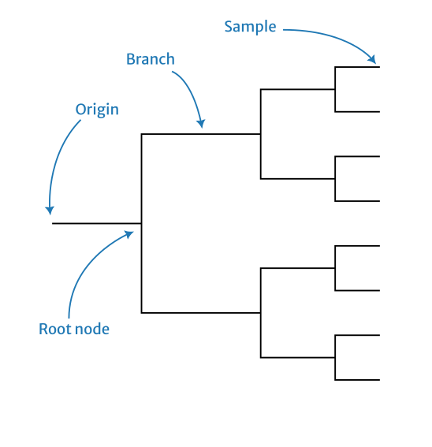
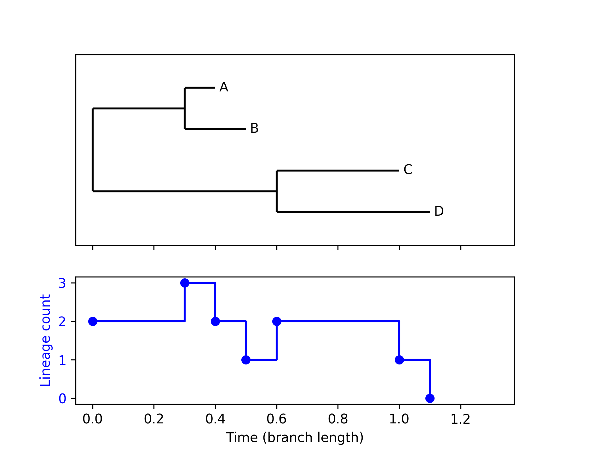
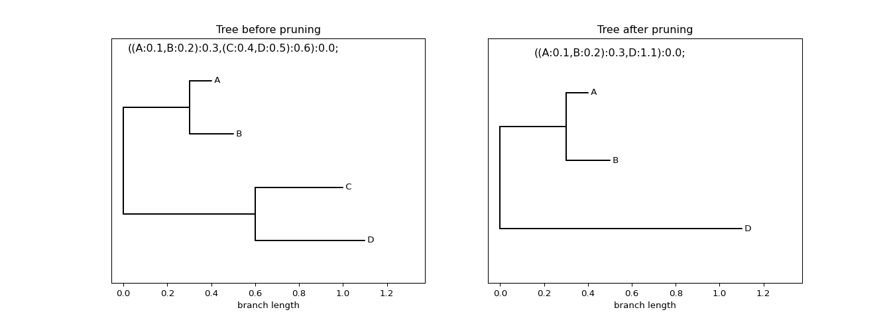

phylogenetics
Table of Contents
- Theory
- Software
- biopython
- Example: Reading Newick from file
- Example: Reading Nexus from file
- Example: Reading Newick from string
- Example: Plotting a tree
- Example: Plotting the lineages through time (LTT)
- Example: Pruning a particular leaf
- Example: Counting the number of leaves
- Example: Normalising a tree to unit branch lengths
- Example: Querying node depths
- Example: Quickly reading a tree from disk
- Beast2
- TempEst
- Rentrez in R (downloading sequence data)
- APE in R
- Phangorn in R
- Ggtree and friends
- biopython
Theory
Phylogeny

Newick grammar
See here for a formal specification of the Newick grammar by Gary Olsen (1990). The important part of this is
Conventions:
Items in { } may appear zero or more times.
Items in [ ] are optional, they may appear once or not at all.
All other punctuation marks (colon, semicolon, parentheses, comma and
single quote) are required parts of the format.
tree ==> descendant_list [ root_label ] [ : branch_length ] ;
descendant_list ==> ( subtree { , subtree } )
subtree ==> descendant_list [internal_node_label] [: branch_length]
==> leaf_label [: branch_length]
root_label ==> label
internal_node_label ==> label
leaf_label ==> label
label ==> unquoted_label
==> quoted_label
unquoted_label ==> string_of_printing_characters
quoted_label ==> ' string_of_printing_characters '
branch_length ==> signed_number
==> unsigned_number
Software
biopython
Biopython is a Python library that aims to provide a comprehensive set of modules for computational biology and bioinformatics.
- the Bio Phylo BaseTree module provides foundational classes for working with phylogenies.
- the Clade class in particular provides a recursively defined tree.
- instances of Clade have
branch_length(the length of the branch to their parent) andclades(a list of their children). - the Clade class has a method
is_terminalwhich is a predicate for if the current clade is a leaf node. - iterating over a Clade will iterate over its direct children.
- the
__len__of a Clade is its number of children.
- instances of Clade have
Example: Reading Newick from file
from Bio import Phylo newick_tree = "((A:0.1, B:0.2):0.3, (C:0.4, D:0.5):0.6);" filename = "foobar.newick" with open(filename, "w+") as file: file.write(newick_tree) tree = Phylo.read(filename, "newick") clade = tree.root assert clade[0][0].branch_length == 0.1 assert clade[0][0].name == "A"
Example: Reading Nexus from file
from Bio import Phylo nexus_tree = """ #NEXUS BEGIN TAXA; TAXLABELS A B C D; END; BEGIN TREES; TREE tree1 = [&R] ((A:0.1,B:0.2):0.3,(C:0.4,D:0.5):0.6); END; """ filename = "foobar.nexus" with open(filename, "w+") as file: file.write(nexus_tree) tree = Phylo.read(filename, "nexus") clade = tree.root assert clade[0][0].branch_length == 0.1 assert clade[0][0].name == "A"
Example: Reading Newick from string
from io import StringIO from Bio import Phylo newick_tree = StringIO("((A:0.1, B:0.2):0.3, (C:0.4, D:0.5):0.6);") tree = Phylo.read(newick_tree, "newick") clade = tree.root assert clade[0][0].branch_length == 0.1 assert clade[0][0].name == "A"
Example: Plotting a tree
Figure 1: Plot generated by the Phylo.draw method.
from io import StringIO from Bio import Phylo newick_tree = StringIO("((A:0.1, B:0.2):0.3, (C:0.4, D:0.5):0.6);") tree = Phylo.read(newick_tree, "newick") Phylo.draw(tree)
Example: Plotting the lineages through time (LTT)

Figure 2: Facetted figure of a phylogeny and its LTT.
The computation of the LTT information from the tree is handled by the
ltt_data function which returns two lists: the times of the LTT
changes and the corresponding values. The sharex=True argument to
plt.subplots is used to ensure the facets share a common x-axis.
from Bio import Phylo from io import StringIO import matplotlib.pyplot as plt import numpy as np def ltt_data(tree): node_times = [] def traverse(clade, current_time): bl = clade.branch_length if clade.branch_length else 0 if clade.clades: node_times.append(('branch', current_time)) for child in clade.clades: if child.is_terminal(): node_times.append(('tip', current_time + child.branch_length)) else: traverse(child, current_time + child.branch_length) traverse(tree.root, 0) times = [] num_lines = [] curr_ltt = 1 for (node_type, time) in node_times: times.append(time) if node_type == 'branch': curr_ltt += 1 num_lines.append(curr_ltt) else: curr_ltt -= 1 num_lines.append(curr_ltt) return times, num_lines newick_tree = StringIO("((A:0.1, B:0.2):0.3, (C:0.4, D:0.5):0.6);") tree = Phylo.read(newick_tree, "newick") fig, (ax1, ax2) = plt.subplots(2, 1, sharex=True, gridspec_kw={'height_ratios': [3, 2]}) Phylo.draw(tree, do_show = False, axes = ax1) ax1.yaxis.set_ticks([]) ax1.yaxis.set_ticklabels([]) ax1.set_ylabel('') ax1.set_xlabel('') ltt_x, ltt_y = ltt_data(tree) ax2.plot(ltt_x, ltt_y, 'bo') ax2.step(ltt_x, ltt_y, 'b-', where='post', label='Sine Wave') ax2.set_ylabel('Lineage count', color='b') ax2.set_xlabel('Time (branch length)') ax2.tick_params(axis='y', labelcolor='b') plt.subplots_adjust(right=0.85) fig.savefig("demo-plotting-ltt.png", dpi=300)
Example: Pruning a particular leaf

Figure 3: Prune away a particular leaf from a tree
To remove a specific leaf from a phylogeny, use the tree.prune()
method. This mutates the tree by dropping the named leaf. The result
is shown in the figure above.
from io import StringIO from Bio import Phylo import matplotlib.pyplot as plt newick_tree = StringIO("((A:0.1, B:0.2):0.3, (C:0.4, D:0.5):0.6);") tree = Phylo.read(newick_tree, "newick") newick_str_pre = tree.format("newick").replace("0000", "") fig, ax = plt.subplots(1, 2, figsize=(14, 5)) Phylo.draw(tree, axes=ax[0], do_show=False) ax[0].set_title("Tree before pruning") ax[0].set_ylabel("") ax[0].set_yticks([]) ax[0].text(0.5, 0.5, newick_str_pre, ha='center', va='center', fontsize=12) # ================================== # Prune the tree by removing a clade # ================================== tree.prune("C") newick_str_post = tree.format("newick").replace("0000", "") # ================================== Phylo.draw(tree, axes=ax[1], do_show=False) ax[1].set_title("Tree after pruning") ax[1].set_ylabel("") ax[1].set_yticks([]) ax[1].text(0.5, 0.5, newick_str_post, ha='center', va='center', fontsize=12) # plt.show() plt.savefig("../images/biopython-tree-pruning.png", dpi=96)
Example: Counting the number of leaves
from io import StringIO from Bio import Phylo newick_tree = StringIO("((A:0.1, B:0.2):0.3, (C:0.4, D:0.5):0.6);") tree = Phylo.read(newick_tree, "newick") print(f"There are {len(tree.get_terminals())} leaves")
There are 4 leaves
Example: Normalising a tree to unit branch lengths
from io import StringIO from Bio import Phylo import copy newick_tree = StringIO("((A:0.1, B:0.2):0.3, (C:0.4, D:0.5):0.6);") tree = Phylo.read(newick_tree, "newick") assert max(tree.depths().values()) == 1.1 def normalise_branch_lengths(tree): """ Normalise a tree to unit branch lengths. """ new_tree = copy.deepcopy(tree) branch_lens = [c.branch_length for c in new_tree.find_clades() if c.branch_length is not None] mean_branch_len = sum(branch_lens) / len(branch_lens) scale_factor = 1 / mean_branch_len for c in new_tree.find_clades(): if c.branch_length is not None: c.branch_length *= scale_factor return mean_branch_len, new_tree mean_branch_len, new_tree = normalise_branch_lengths(tree) print(f"The mean branch length was {format(mean_branch_len, '.3f')}") print(f"The old tree height is {max(tree.depths().values())}") print(f"The new tree height is {format(max(new_tree.depths().values()), '.3f')}") assert max(tree.depths().values()) == 1.1 assert abs(max(new_tree.depths().values()) - (1.1 * scale_factor)) < 1e-6
The output of this script is
The mean branch length was 0.350 The old tree height is 1.1 The new tree height is 3.143
Example: Querying node depths
This script demonstrates how to query the depth of a node in a tree
given a reference to the corresponding clade. The documentation for
the depths method is here.
from io import StringIO from Bio import Phylo import copy newick_tree = StringIO("((A:0.1, B:0.2):0.3, (C:0.4, D:0.5):0.6);") tree = Phylo.read(newick_tree, "newick") depth_dict = tree.depths() # The root node should have a depth of 0.0 assert depth_dict[tree.clade] == 0.0 # The depth of the left internal node should be 0.3 assert depth_dict[tree.clade.clades[0]] == 0.3 # The depth of leaf A should be 0.4 assert depth_dict[tree.clade.clades[0].clades[0]] == 0.4 # The depth of leaf B should be 0.5 assert depth_dict[tree.clade.clades[0].clades[1]] == 0.5 # The depth of the right internal node should be 0.6 assert depth_dict[tree.clade.clades[1]] == 0.6 # The depth of leaf C should be 1.0 assert depth_dict[tree.clade.clades[1].clades[0]] == 1.0 # The depth of leaf D should be 1.1 assert depth_dict[tree.clade.clades[1].clades[1]] == 1.1
Example: Quickly reading a tree from disk
TLDR: pickle is faster than Newick. Also, don't worry about
cPickle, that's what Python 3.x is using anyway.
The following code writes a big tree to one of two types of files: a plain text Newick file or a pickle. It then reads those trees back multiple times to get an estimate of how long it takes. Across a range of tests we see that the pickled version is about twice as fast, but this seems to diminish as we get to larger trees.
from io import StringIO from Bio import Phylo import pickle import timeit def _tree_string(n): if n == 0: return "(A:0.1, A:0.1):0.1" else: tmp = _tree_string(n-1) return f"({tmp}, {tmp}):0.1" def tree_string(n): return _tree_string(n) + ";" newick_tree = tree_string(9) filename_newick = "foobar.newick" with open(filename_newick, "w+") as file: file.write(newick_tree) filename_pickle = "foobar.pickle" newick_tree_obj = Phylo.read(StringIO(newick_tree), "newick") with open(filename_pickle, "wb+") as file: pickle.dump(newick_tree_obj, file) def test_a(): tree = Phylo.read(filename_newick, "newick") return len(tree.get_terminals()) def test_b(): with open(filename_pickle, "rb") as file: tree = pickle.load(file) return len(tree.get_terminals()) assert test_a() == test_b() num_reps = 250 time_a = timeit.timeit(lambda: test_a(), number=num_reps) time_b = timeit.timeit(lambda: test_b(), number=num_reps) print(f"The ratio of time needed is {(time_a/time_b):.2f} for Bio/pickle with {test_a()} nodes with {num_reps} replicates.")
Gives us the following examples for different tree sizes.
The ratio of time needed is 1.98 for Bio/pickle with 256 nodes with 250 replicates. The ratio of time needed is 2.00 for Bio/pickle with 512 nodes with 250 replicates. The ratio of time needed is 1.80 for Bio/pickle with 1024 nodes with 250 replicates. The ratio of time needed is 1.69 for Bio/pickle with 2048 nodes with 250 replicates.
Beast2
TempEst
Example 1
The following examples demonstrates how to use ape::dist.dna and
ape::nj to get a simple tree that can be read into TempEst.
alignment_dna <- read.dna("alignment.fasta", format = "fasta") dist_matrix <- dist.dna(alignment_dna, model = "K80", pairwise.deletion = TRUE) nj_phylo <- nj(dist_matrix) write.nexus(nj_phylo, file = "nj-tree.nexus")
Example 2
We will use the tree shown in Figure 1 an example
When we simulate some sequences on this and then create a neighbour-joining tree based on these sequences we can put this into TempEst to check if there is any signal in the data. The screen shot in Figure 2 shows the results. Note that even with ideal data the result is not perfect.
Here is the code that simulated the data set.
library(ape) library(phangorn) set.seed(1) #' Read in a simple tree to use as an example so we do not #' need to mess around trying to simulate one. demo_tree <- read.tree(text = "(((((A:2.0,B:1.0):2.0,C:1.0):2.0,D:1.0):2.0,E:1.0):2.0,F:1.0);") png(filename="tempest-demo-tree.png") plot(demo_tree) dev.off() num_tips <- length(demo_tree$tip.label) tip_times <- head( node.depth.edgelength(demo_tree), num_tips ) #' Relabel the tips to preserve the sampling date in a #' suitable format for subsequent use. demo_tree$tip.label <- sprintf("%s_%f", demo_tree$tip.label, tip_times) demo_seqs <- demo_tree |> simSeq(l = 1e4, rate = 1e-3) |> as.character() #' Compute the distances manually because the functions #' provided seem to be a bit buggy. demo_distances <- matrix(0, num_tips, num_tips) rownames(demo_distances) <- demo_tree$tip.label colnames(demo_distances) <- demo_tree$tip.label for (ix in 1:(num_tips - 1)) { for (jx in ix:num_tips) { jac <- sum(demo_seqs[ix,] != demo_seqs[jx,]) demo_distances[ix,jx] <- jac demo_distances[jx,ix] <- jac } } #' Estimate the tree using the distances and write this to a #' nexus file so it can be read into TempEst. demo_nj <- nj(demo_distances) write.nexus(demo_nj, file = "tempest-demo-data.nexus")
Rentrez in R (downloading sequence data)
By default, rentrez returns fetched data as an XML object from the
XML package, rather than as an xml_node from the xml2 package,
which is much easier to work with, so I'll add a helper here to move
between them.
#' Fetch Entrez data as XML object #' #' @param ... Arguments to pass to =rentrez::entrez_fetch= #' #' @return An =xml_node= object #' #' @examples #' entrez_obj <- fetch_as_xml(db = "nucleotide", id = accession_numbers) #' fetch_as_xml <- function(...) { temp_file <- tempfile() on.exit(file.remove(temp_file)) entrez_obj <- rentrez::entrez_fetch( ..., rettype = "xml", parsed = TRUE ) XML::saveXML(entrez_obj, file = temp_file) return(xml2::read_xml(temp_file)) }
APE in R
Use rlineage to simulate the complete tree. To get the sub-tree consisting of
just those that made it to the present use drop.fossils. If you want to filter
for particular nodes, there is keep.tip and drop.tip.
There is a plot.phylo method and ltt.plot which can be used to get quick
visualisations of a phylogeny, but for publication quality figures you probably
want to use Ggtree.
The phylo class
The phylo class is pretty much the defacto standard for representing
phylogenies in R. A phylogeny with \(n\) tips is represented as a phylo which
has the following attributes:
Nnodeis the number of internal nodes in the tree,tip.labelis a string indicating the name of each tip,edgeis a matrix with two columns where a row, \([i,j]\), indicates an edge from node \(i\) to node \(j\),edge.lengthis an array where element is the length of an edge in the corresponding row of theedgematrix.
Note that the indexing of the nodes of the tree is \(1\) to \(n\) for the tips
and the internal nodes get allocated the integers \(n+1,n+2,\dots\). You do not
want to reconstruct the tree from this information yourself though so ape
offers convenience functions such as node.depth.edgelength which gives you the
depths from the TMRCA down to each node.
Simulation
I wrote a little tool that uses ape to simulate from the birth-death-sampling-occurrence process. It is available in this gist.
To simulate from the process with time varying rates, here is a little example. Note that this uses forwards time starting from the origin as time zero. Figure X shows the output of this simulation.
library(ape) library(purrr) set.seed(1) birth_rate <- function(ts) { ifelse(ts < 0.5, 5.0, 1.0) } death_rate <- function(ts) { rep(2.0, length(ts)) } max_ltt <- function(x) { max(ltt.plot.coords(x)[,2]) } ps <- purrr::map(1:100, \(x) rlineage(birth_rate, death_rate, Tmax = 1)) y_upper_lim <- purrr::map(ps, max_ltt) |> as_vector() |> max() png('ape-rlineage-demo.png', width = 1.618 * 300, height = 300, units = "px") ltt.plot(ps[[1]], ylim = c(1, y_upper_lim)) purrr::walk(tail(ps, -1), ltt.lines) abline(v=-0.5, col='red') dev.off()
Phangorn in R
The Trees vignette with the phangorn package gives a very clear explanation of how to estimate a maximum likelihood tree to describe a time stamped MSA. Here is a summary of the steps involved with estimating a tree for H3N2 sequences that are bundled with the package.
First we load in the time stamped sequences that are bundled with the package and construct a named vector with the tip dates. Note that older versions of the package do not come with this dataset so you may need to update to a more recent version, otherwise you can get it from a recent copy of the source code on GitHub.
library(ape) library(phangorn) fdir <- system.file("extdata/trees", package = "phangorn") tmp <- read.csv(file.path(fdir, "H3N2_NA_20.csv")) H3N2 <- read.phyDat(file.path(fdir, "H3N2_NA_20.fasta"), format = "fasta") dates <- setNames(tmp$numdate_given, tmp$name)
Here we use the black box function to estimate the tree with a \(\text{GTR} + \Gamma(4)\) model and dated tips. There are far more details in the the vignette about how to do this without just calling a black box, but this is a quick way to get something to start subsequent analyses with.
fit_td <- pml_bb( H3N2, model = "GTR+G(4)", method = "tipdated", tip.dates = dates, rearrangment = "NNI", control = pml.control(trace = 0) )
Then we can make a simple plot showing the estimated tree.
tree_td <- fit_td$tree root_time <- max(dates) - max(node.depth.edgelength(tree_td)) png("phangorn-demo.png", width = 1.618 * 300, height = 300, units = "px" ) plot(tree_td, show.tip.label = FALSE) title(main = "H3N2", adj = 1) title(sub = "Timed tree estimated using phangorn", line = -13, adj = 1) axisPhylo(root.time = root_time, backward = FALSE) dev.off()
Ggtree and friends
To parse the various tree formats there is the treeio package which has
functions such as read.beast and read.nhx. This will produce a value of the
treedata class which is defined in the tidytree package. The treedata is
an S4 class, so it has slots. So to get the phylo object storing the
topology you would use mytreedata@phylo and to get associated data there is a
data slot.
To actually visualise these objects there is the ggtree package which provides
geometries in the style of Ggplot2. Note that to install these packages you will
likely want to use Bioconductor.
BiocManager::install("ggtree")